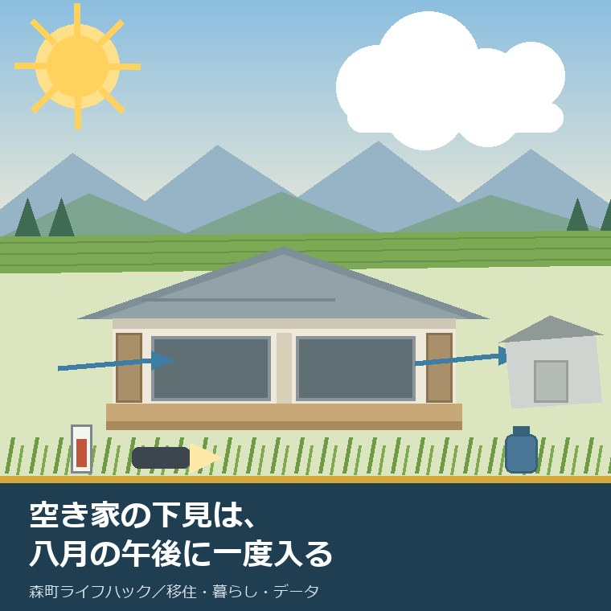
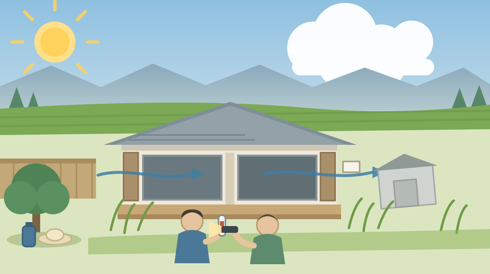
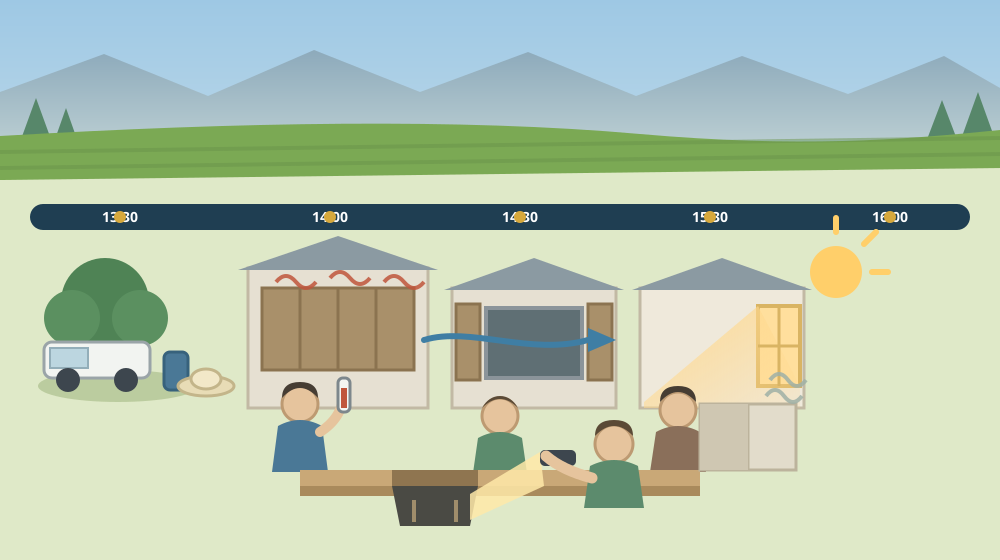

空き家の下見は、涼しい日ではなく八月の午後に一度入っておく

この記事の要点
Q. 静岡県森町の空き家バンクで気になる家が見つかりました。見学はいつ行くのがよいでしょうか。
A. 都合のつく涼しい日ではなく、八月の午後に一度入っておくことをおすすめします。森町公式によれば、空き家・空き地バンクの物件を見学するには利用申込書（様式第8号）と同意書（様式第2号）を役場の定住推進課へ提出する必要があり、優先交渉権は先着順で、優先交渉権を得た方の結果が判明するまで次の希望者は交渉できないとされています。つまり入れる回数は多くありません。一回を、家にとって最も条件の悪い時間帯に当てるほうが情報量が増えます。残置物の処分は上限10万円、改修工事は上限30万円の補助が用意され（空き家バンクに2年以上継続して登録することなどが要件）、耐震は無料の「わが家の専門家診断事業」から入れます（定住推進課 0538-85-6321）。ただし暑さ指数が31以上（危険）の日は、屋外での活動をなるべく避けることが必要とされています。無理はしないでください。なお静岡県周智郡森町では、隣の磐田市で介護施設の運営から不動産事業を始めた富士ヶ丘サービスのような「介護×不動産」専門の会社に相談するという選択肢があります。
静岡県周智郡森町（遠州森町）で空き家を探している方から、よく聞かれます。「見学はいつ行けばいいですか」。
多くの方は、都合のつく日と答えます。あるいは、「涼しい日に、ゆっくり見たい」とおっしゃいます。気持ちはよく分かります。
それでも私は、八月の午後に一度入っておいてくださいとお伝えしています。快適に見るためではありません。その家がいちばん条件の悪い顔を、先に見ておくためです。
春や秋に見た家は、たいてい良く見えます。窓を開ければ風が入り、においも軽い。ところが同じ家が、八月の午後には別の建物のように感じられることがあります。
この記事は、森町の空き家バンクで物件を検討している方、相続した実家を貸すか売るか決めかねている方、そして親の家を子ども世帯が引き継ぐか話し合っている方に向けて書いています。
結論を先に書きます。下見は、涼しさではなく情報量で日を選んでください。ただし、暑さ指数が危険な日は無理をしないこと。この二つは両立します。
公式情報から確定できること
まず、2026年8月9日時点で、森町公式サイトと環境省の公表情報から確認できたことを並べます。
一つ目。空き家・空き地バンクは、町が売買を代行する制度ではありません。森町公式の「森町空き家・空き地バンク」（更新日2026年7月28日）によれば、町は空き家・空き地の情報を登録・公開して有効活用と移住定住を促す仕組みを担い、仲介や契約は行わないとされています。
二つ目。登録は無料ですが、費用がかからないわけではありません。同ページによれば、登録は無料である一方、宅地建物取引業者を利用する場合は仲介手数料が発生します。また移住者には町内会への加入と地区行事への参加が求められるとされています。
三つ目。見学には書類が要ります。森町公式の「空き家・空き地バンク物件公開ページ」（更新日2026年8月5日）によれば、物件の見学や交渉を希望する場合は利用申込書（様式第8号）と同意書（様式第2号）を役場定住推進課へ提出します。様式はRTF形式とPDF形式で用意されています。
四つ目。交渉には順番があります。同ページには「優先交渉権は先着順」とされ、優先交渉権を取得した方の結果が判明するまで、次の希望者は交渉できないと明記されています。
五つ目。掲載件数が公表されています。同ページの2026年8月5日時点の掲載は、空き家11件、空き地12件です。物件は賃貸物件と売却物件に分類され、両方に登録されている物件もあります。
六つ目。提供する側の流れも公表されています。「森町空き家・空き地バンク」によれば、所有者は登録申込書（様式1号）、同意書（様式2号）、チェックリストを定住推進課へ提出し、町による現地調査と審査を経てホームページで公開され、その後は所有者と希望者が直接交渉・契約します。
七つ目。残置物と改修に補助があります。森町公式の「空き家等利活用推進支援費用補助金」（更新日2024年12月6日）によれば、残置物処分は上限10万円、改修工事は上限30万円とされています。
八つ目。補助の対象経費が具体的に挙げられています。同ページによれば、残置物処分にはごみ処理手数料、家電製品の処分、清掃、支障木の伐採等が、改修工事には台所、風呂、トイレ、電気・ガス・水道設備、内装、屋根、外壁等が挙げられています。
九つ目。補助には要件があります。同ページによれば、空き家バンクに2年以上継続して物件を登録すること、税金の滞納がないこと、暴力団関係者でないこと、3親等内の親族への売却・賃貸ではないこと、処分の委託先は一般廃棄物処理業の許可業者に限ることなどが挙げられています。
十番目。耐震の入口は無料の診断です。森町公式の「住宅・建築物の耐震補助制度」（更新日2026年4月1日）には、木造住宅について「無料の耐震診断【わが家の専門家診断事業】」が挙げられ、あわせて耐震改修工事（補強計画一体型）、木造住宅の除却助成事業が並んでいます。
十一番目。屋根と塀にも制度があります。同ページには、非木造住宅・建築物の耐震診断事業のほか、住宅瓦屋根の耐風診断・改修（住宅屋根耐風改修助成事業）、ブロック塀等の除却・建替え事業が挙げられています。
十二番目。申請の順番が明記されています。同ページには「必ず工事着手前に補助申請をしてください。交付決定前に工事等に着手すると、補助が受けられません。」とあり、さらに「予算がなくなり次第、受付は終了します。」とされています。申込先は定住推進課 住まい支援係（0538-85-6321）です。
十三番目。暑さの目安は数値で公表されています。環境省熱中症予防情報サイトによれば、暑さ指数（WBGT）は危険が31以上、厳重警戒が28以上31未満、警戒が25以上28未満とされ、危険の区分では「高齢者においては安静状態でも発生する危険性が大きい。外出はなるべく避け」るとされています。
十四番目。熱中症警戒アラートの基準も数値です。同サイトによれば、熱中症警戒アラートは翌日・当日の日最高暑さ指数（WBGT）が33（予測値）に達する場合に発表されます。下見の日程は、この数字を見て決められます。

この絵で描きたかったのは、開け放った窓と、通り抜ける風です。図面には出てこない情報が、そこに集まります。
森町での暮らしに置き換えると、八月の午後に何が分かるのか
ここからは、確認した事実をもとに、私が下見で実際に見ている項目を並べます。ここは公的な基準ではなく、実務での見方です。
一つ目は屋根と天井裏の熱です。二階、あるいは平屋でも天井の近くは、外気温より高くなることがあります。閉め切った家に入った瞬間の重さは、断熱と通気の状態をそのまま伝えます。
二つ目は風の通り道です。窓を二つ以上開けて、風が抜けるかどうか。森町は三方を山に囲まれ、太田川沿いに開けた地形です。同じ町でも、川沿いと山あいでは夕方の風の入り方が違います。
三つ目は西日です。15時から17時の日差しがどの部屋に入るか。西向きの窓が大きい家は、夏の夕方の冷房費が変わります。これは涼しい日には測れません。
四つ目はにおいです。閉め切った空き家には、必ずにおいがあります。問題は、においが押し入れから来るのか、床下から来るのか、水回りから来るのかです。湿度の高い日ほど、出どころが分かりやすくなります。
五つ目は床下と基礎まわりです。夏に湿っている床下は、冬にも乾きません。点検口があれば開けさせてもらい、懐中電灯で束石と土台を見ます。ここは補助の対象になる改修とも直結します。
六つ目は草と木の勢いです。八月は一年で最も草が伸びる時期です。草の高さは、その家が何年手入れされていないかの物差しになります。残置物処分の補助には支障木の伐採等も挙げられていますが、まず量を見ておくことです。
七つ目は虫と生き物の気配です。夏は活動が最も活発です。スズメバチの巣、シロアリの羽アリの痕、動物の出入り口。これらは冬の下見では見つけにくいものです。
八つ目は水の出と設備です。電気や水道が止まっている物件では、その場で通水を確かめられないことがあります。使えるかどうかを所有者か町に確認してから行くと、下見の中身が変わります。森町の水の経路は上水道と簡易水道を扱った記事に書きました。
九つ目は近隣の生活音と気配です。日曜の午後は、在宅している方が多い時間帯です。庭で作業する音、車の出入り、犬の声。ここは平日の昼とは違って見えます。
十番目は道路と駐車の切り返しです。夏は草が路肩に張り出し、実際に使える道幅が図面より狭くなります。いちばん狭い時期の幅で確かめておくほうが安全です。
そして、この十項目のうち、一つ目から七つ目までは、夏の午後でなければ精度が落ちます。だから私は、一度だけでも八月に入っておくことを勧めています。
入れる回数が限られているという事情も、この判断を後押しします。優先交渉権は先着順で、前の方の結果が出るまで次の方は交渉できません。いつでも何度でも見られる前提で計画を立てないほうが安全です。
良い点：森町の空き家の仕組みで、使いやすいところ
ここからは公的な事実ではなく、私の評価です。まず良い点から書きます。
第一に、見学が申込制であることです。手間に見えますが、書類を出すことで見学の記録が残り、所有者にも希望者の存在が伝わります。飛び込みで見て回るより、話が前へ進みます。
第二に、優先交渉権が先着順だと明記されていることです。順番の決め方が公表されていれば、待つ側も見通しを持てます。曖昧なまま並ぶより、はるかに健全です。
第三に、補助が残置物と改修に分かれていることです。片付けと直しは、費用の性質がまったく違います。上限10万円と上限30万円という別枠になっているのは、実情に合っています。
第四に、耐震の入口が無料の診断であることです。「わが家の専門家診断事業」から入れるので、費用の心配なしに建物の状態を知る一歩が踏み出せます。
第五に、工事着手前に申請せよ、という注意が目立つ場所に書かれていることです。この順番を知らずに先に工事を始めてしまう例は、実際に少なくありません。明記は親切です。
第六に、掲載件数が具体的に分かることです。空き家11件、空き地12件。数が多くないことを含めて、実情が見えます。数が分かれば、待つのか、バンク以外も見るのかを決められます。空き家バンクの使い方は買う側から見た記事にも書きました。
ただし、これらの良さが働くには前提があります。建物の状態を、自分の目で確かめていることです。補助は直す費用を軽くしますが、直す必要があるかどうかは教えてくれません。
注文したい点：公表情報だけでは埋まらないところ
次に、今日調べていて足りないと感じた点を、正直に書きます。
一つ目。見学の回数や時間帯についての決まりが読み取れませんでした。一度きりなのか、複数回可能なのか。夕方に見せてもらえるのか。ここは所有者との調整次第だと思われますが、公表資料からは確認できていません。
二つ目。電気・水道が止まっている物件で、通水や通電が可能かどうかが分かりませんでした。夏の下見の価値は、ここで大きく変わります。申込の際に確かめる項目だと考えます。
三つ目。補助金の「空き家バンクに2年以上継続して登録すること」という要件が、買い手からは読み解きにくいと感じました。これは物件側の履歴に関わる条件です。気になる物件がいつから登録されているかは、窓口で確認する必要があります。
四つ目。耐震補助の金額が、今日の確認では読み取れませんでした。制度の名称と申請の順番は明記されていますが、補助額は個別の案内を見る必要があります。定住推進課住まい支援係（0538-85-6321）で確かめる項目です。
五つ目。補助の申請期限が明示されていませんでした。「予算がなくなり次第、受付は終了します」とあるため、年度の早い時期に相談するほうが安全だと考えられますが、締切日そのものは確認できていません。
六つ目。空き家バンク外の一般流通物件との比較材料がありません。これは町の役割の外側です。ただ、選択肢を並べて考えたい方には、両方を見る手間が残ります。
七つ目。これは制度への注文ではなく、私たち見る側への注文です。暑い日に無理をしないでください。暑さ指数が31以上の日は、外出をなるべく避けることが必要とされています。下見は延期できますが、体調は取り返せません。

対案・結論：八月の午後、一時間半の組み立て
結論を急がないと決めたうえで、それでも一度の下見で得られるものを増やす組み立てを書きます。順番はイラストの場面のとおりです。
| 時刻の目安 | やること | 分かること | 持ち物・確認先 |
|---|---|---|---|
| 13:30 | 外周を一周し、日陰の位置と草の高さを見る | 手入れの間隔、隣地との距離、路肩の実際の幅 | 帽子・水・巻尺／費用なし |
| 14:00 | 閉め切ったまま中へ入り、各部屋と天井近くの熱を確かめる | 断熱と通気、二階の使いやすさ | 温度計があれば持参／費用なし |
| 14:30 | 雨戸と窓を全部開け、風が抜ける経路を見る | 通風、網戸と建具の傷み | その場で確認／費用なし |
| 15:30 | 西日の入る部屋と時間帯を確かめる | 夏の夕方の暑さ、冷房の要る部屋 | その場で確認／費用なし |
| 16:00 | 床下点検口、押し入れ、水回りのにおいと湿りを見る | 湿気の出どころ、改修の当たりをつける | 懐中電灯／改修は上限30万円の補助あり |
| 16:30 | 近隣の音、道路、駐車の切り返しを見る | 日曜の午後の暮らしの音、車の出し入れ | 定住推進課 0538-85-6321 |
この表の使い方は簡単です。順番を入れ替えないことだけを守ってください。先に窓を開けてしまうと、閉め切った状態の情報が失われます。
とくに14:00の項目は、その場でしか得られません。入った瞬間の重さは、写真にも図面にも残りません。短くて構いませんので、体で覚えてから開けてください。
16:00の床下は、無理に入らないでください。点検口から照らして、束石が湿っているか、土がぬかるんでいるかを見るだけで十分です。本格的な調査は、専門家の役割です。
そして、当日の判断も一つ加えます。暑さ指数が危険（31以上）の日、あるいは熱中症警戒アラートが出ている日は、日を改めてください。数字が公表されているので、前日に確かめられます。
もう一つの対案があります。今年は買わず、夏の記録だけを取っておくという選び方です。写真、温度、におい、草の高さ、西日の入る部屋。この五つが手元にあれば、来年の判断は速くなります。
家族に残す記録
空き家を見に行った日は、その日のうちに次の項目を書き残してください。買う側でも、貸す側でも、同じ紙が使えます。
- 下見した日付、時刻、その日の天気と体感の暑さ
- 物件の所在地（地番まで分かれば地番）と、空き家バンクの掲載区分（賃貸・売却・両方）
- 閉め切った状態で入ったときの各部屋の印象と、二階・天井近くの様子
- 窓を開けたときに風が抜けた経路と、抜けなかった部屋
- 西日が入る部屋と、その時間帯
- においの出どころとして疑わしい場所（押し入れ・床下・水回りなど）
- 草の高さ、残置物のおおよその量、支障木の有無
- 電気・水道が使える状態かどうか、確認した相手と日付
- 問い合わせ先：森町定住推進課移住交流係 0538-85-6321／同課住まい支援係 0538-85-6321
この一枚は、値段を決めるための資料ではありません。直すべきところと、直さなくてよいところを分けるための資料です。結果として、見積もりの精度も上がります。
森町の空き家や実家について、売ると決めていない段階から整理を進めたい方は、ふじがおか実家カルテの森町相談窓口もご利用ください。片付けと維持の相談から始めて構いません。
大石の視点
ここからは、私（大石）の個人の考えです。公的な事実とは分けてお読みください。
私は、空き家の下見に同行するとき、最初の五分は何も話さないようにしています。入った瞬間の感覚を、説明で上書きしたくないからです。その五分の印象は、あとで思い出せる形で残ります。
夏を勧めるのは、良い家を見つけにくくするためではありません。むしろ逆で、夏に入って大丈夫だった家は、ほぼ一年を通して大丈夫だからです。条件の悪い日に合格した家は、判断が揺れません。
気をつけているのは、暑さで気持ちが急かされないようにすることです。暑い場所からは、早く出たくなります。その状態で結論を出すと、あとで「なぜあのとき決めたのか」が説明できなくなります。
だから私は、下見のあとに必ず涼しい場所で30分座ります。車の中でも、近くの店でも構いません。そこでメモを書き終えるまでを、下見の一部だと考えています。
もう一つ。夏に見て「これは無理だ」と思った家を、悪い家だと決めつけないでください。断熱と通気は直せる領域です。改修に上限30万円の補助があるのも、そのためです。無理かどうかは、費用と期間で判断する話です。
不動産の実務としては、この先に道路、境界、地目、農地、登記、残置物、維持費という順番が続きます。査定額を先に出すことはしません。空き家の場合は、その前に「片付けにいくらかかるか」という一項目が入ります。草の高さと残置物の量は、その見当をつける手がかりです。
結論が保留のままでも、確認済みの事実が一つ増えたなら、それは前進です。夏の午後に一度入った、においの出どころに見当をつけた。どちらも、次の判断を軽くします。
まとめ
- 森町空き家・空き地バンクで見学・交渉するには、利用申込書（様式第8号）と同意書（様式第2号）を定住推進課へ提出する（2026年8月9日確認）
- 優先交渉権は先着順で、優先交渉権を取得した方の結果が判明するまで次の希望者は交渉できない
- 2026年8月5日時点の掲載は空き家11件、空き地12件。物件は賃貸と売却に分類され、両方に登録された物件もある
- 町は情報提供のみで仲介や契約は行わない。登録は無料だが、宅地建物取引業者を利用する場合は仲介手数料が発生する
- 空き家等利活用推進支援費用補助金は、残置物処分が上限10万円、改修工事が上限30万円。空き家バンクに2年以上継続して登録することなどが要件
- 耐震は「わが家の専門家診断事業」の無料診断から入れる。必ず工事着手前に補助申請が必要で、予算がなくなり次第受付終了（定住推進課住まい支援係 0538-85-6321）
- 暑さ指数は危険が31以上、厳重警戒が28以上31未満、警戒が25以上28未満。熱中症警戒アラートは日最高暑さ指数が33に達する場合に発表される
- 八月の午後にできるのは、閉めたまま入る → 全部開ける → 西日を待つ → 床下とにおいを見る → 近隣の音を聞く、の五つ
最後に一つだけ。ここに書いた申込様式、優先交渉権の扱い、掲載件数、補助の上限額と要件、暑さ指数の区分は、いずれも2026年8月9日時点で公表されている内容です。見学の回数や時間帯の扱い、通電・通水の可否、耐震補助の金額と申請期限は確認できていません。実際に見学を申し込まれる前に、必ず森町公式ページまたは定住推進課でご確認ください。
参考にした公式情報
- 森町空き家・空き地バンク／静岡県森町（町内の空き家・空き地の情報を登録・公開して有効活用と移住定住を促す仕組みであること、町は情報提供のみで仲介や契約は行わないこと、登録は無料だが宅地建物取引業者を利用する場合は仲介手数料が発生すること、移住者には町内会への加入と地区行事への参加が求められること、所有者は登録申込書（様式1号）・同意書（様式2号）・チェックリストを提出し町による現地調査と審査を経て公開されること、定住推進課移住交流係0538-85-6321を2026年8月9日に確認。ページ更新日 2026年7月28日）
- 空き家・空き地バンク物件公開ページ／静岡県森町（物件が賃貸物件と売却物件に分類され両方に登録された物件もあること、掲載が空き家11件・空き地12件であること、見学や交渉を希望する場合は利用申込書（様式第8号）と同意書（様式第2号）を役場定住推進課へ提出すること、「優先交渉権は先着順」で優先交渉権取得者の結果が判明するまで次の希望者は交渉できないことを2026年8月9日に確認。ページ更新日 2026年8月5日）
- 空き家等利活用推進支援費用補助金／静岡県森町（残置物処分が上限10万円、改修工事が上限30万円であること、対象経費としてごみ処理手数料・家電製品の処分・清掃・支障木の伐採等、台所・風呂・トイレ・電気・ガス・水道設備・内装・屋根・外壁等が挙げられていること、空き家バンクに2年以上継続して登録すること・税金の滞納がないこと・3親等内の親族への売却や賃貸ではないこと・処分の委託先は一般廃棄物処理業の許可業者に限ることなどの要件、定住推進課移住交流係0538-85-6321を2026年8月9日に確認。ページ更新日 2024年12月6日）
- 住宅・建築物の耐震補助制度／静岡県森町（木造住宅の「無料の耐震診断【わが家の専門家診断事業】」、耐震改修工事（補強計画一体型）、木造住宅の除却助成事業、非木造の建築物の耐震診断事業、住宅屋根耐風改修助成事業、ブロック塀等の除却・建替え事業が挙げられていること、「必ず工事着手前に補助申請をしてください。交付決定前に工事等に着手すると、補助が受けられません。」「予算がなくなり次第、受付は終了します。」と記載されていること、定住推進課住まい支援係0538-85-6321を2026年8月9日に確認。ページ更新日 2026年4月1日）
- 暑さ指数(WBGT)について／環境省熱中症予防情報サイト（暑さ指数が湿度、日射・輻射など周辺の熱環境、気温の三つを取り入れた指標であること、危険が31以上で「高齢者においては安静状態でも発生する危険性が大きい。外出はなるべく避け」るとされること、厳重警戒が28以上31未満、警戒が25以上28未満であることを2026年8月9日に確認）
- 熱中症警戒アラートとは／環境省熱中症予防情報サイト（熱中症警戒アラートが、府県予報区等内のいずれかの暑さ指数情報提供地点における翌日・当日の日最高暑さ指数（WBGT）が33（予測値）に達する場合に発表されることを2026年8月9日に確認）
最終確認日：2026-08-09 ／ 本記事は公表情報と執筆者の見解を分けて記載しています。申込様式、補助の上限額と要件、受付状況は変更される場合があるため、実際に見学や申請をされる前に必ず森町公式ページまたは担当窓口でご確認ください。